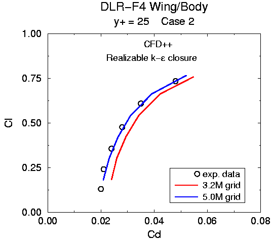

Uriel Goldberg
For the sake of completion, the attached figure shows CFD++'s drag polar
predictions (Case 2) using the original and refined meshes. The 3.2M
grid result was shown during the workshop, the 5.0M grid result was
recently calculated.
Please let me know if you would like me to send you Cp profiles at
various wing span sections.
Sincerely,
Uriel Goldberg
